Solve Systems of Equations by Elimination
We have solved systems of linear equations by graphing and by substitution. Graphing works well when the variable coefficients are small and the solution has integer values. Substitution works well when we can easily solve one equation for one of the variables and not have too many fractions in the resulting expression.
The third method of solving systems of linear equations is called the Elimination Method. When we solved a system by substitution, we started with two equations and two variables and reduced it to one equation with one variable. This is what we’ll do with the elimination method, too, but we’ll have a different way to get there.
Solve a System of Equations by Elimination
The Elimination Method is based on the Addition Property of Equality. The Addition Property of Equality says that when you add the same quantity to both sides of an equation, you still have equality. We will extend the Addition Property of Equality to say that when you add equal quantities to both sides of an equation, the results are equal.
For any expressions a, b, c, and d,
To solve a system of equations by elimination, we start with both equations in standard form. Then we decide which variable will be easiest to eliminate. How do we decide? We want to have the coefficients of one variable be opposites, so that we can add the equations together and eliminate that variable.
Notice how that works when we add these two equations together:
The y’s add to zero and we have one equation with one variable.
Let’s try another one:
This time we don’t see a variable that can be immediately eliminated if we add the equations.
But if we multiply the first equation by −2, we will make the coefficients of x opposites. We must multiply every term on both sides of the equation by −2.
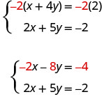
Now we see that the coefficients of the x terms are opposites, so x will be eliminated when we add these two equations.
Add the equations yourself—the result should be −3y = −6. And that looks easy to solve, doesn’t it? Here is what it would look like.
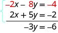
We’ll do one more:
It doesn’t appear that we can get the coefficients of one variable to be opposites by multiplying one of the equations by a constant, unless we use fractions. So instead, we’ll have to multiply both equations by a constant.
We can make the coefficients of x be opposites if we multiply the first equation by 3 and the second by −4, so we get 12x and −12x.
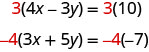
This gives us these two new equations:
When we add these equations,
the x’s are eliminated and we just have −29y = 58.
Once we get an equation with just one variable, we solve it. Then we substitute that value into one of the original equations to solve for the remaining variable. And, as always, we check our answer to make sure it is a solution to both of the original equations.
Now we’ll see how to use elimination to solve the same system of equations we solved by graphing and by substitution.
How to Solve a System of Equations by Elimination
Solve the system by elimination.
Solution
Solution
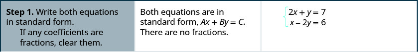
![The second row reads, “Step 2: Make the coefficients of one variable opposites. Decide which variable you will eliminate. Multiply one or both equations so that the coefficients of that variable are opposites.” It also says, “We can eliminate the y’s by multiplying the first equation by 2. Multiply both sides of 2x + y = 7 by 2.” It also shows the steps with equations. Initially the equations are ex + y = 7 and x – 2y = 6. Then they become 2(2x + y) = 2 times 7 and x – 2y = 6. They then become 4x + 2y = 14 and x – 2y = 6.](../../media/CNX_ElemAlg_Figure_05_03_004b_img_new.jpg)
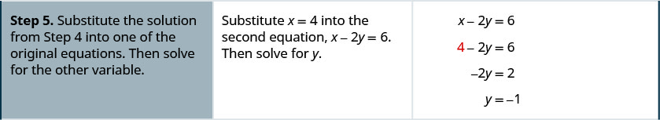
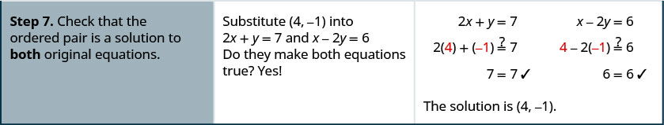
The steps are listed below for easy reference.
First we’ll do an example where we can eliminate one variable right away.
Solve the system by elimination.
Solution
Solution
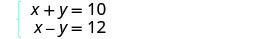 |
|
| Both equations are in standard form. | |
| The coefficients of y are already opposites. | |
| Add the two equations to eliminate y. The resulting equation has only 1 variable, x. |
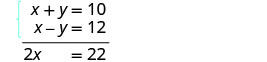 |
| Solve for x, the remaining variable. Substitute x = 11 into one of the original equations. |
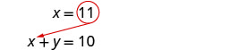 |
| Solve for the other variable, y. | |
| Write the solution as an ordered pair. | The ordered pair is (11, −1). |
| Check that the ordered pair is a solution to both original equations. |
|
| The solution is (11, −1). |
In Example 3, we will be able to make the coefficients of one variable opposites by multiplying one equation by a constant.
Solve the system by elimination.
Solution
Solution
| Both equations are in standard form. | |
| None of the coefficients are opposites. | |
| We can make the coefficients of y opposites by multiplying the first equation by −3. |
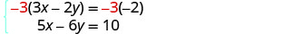 |
| Simplify. | 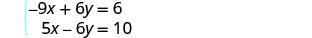 |
| Add the two equations to eliminate y. | 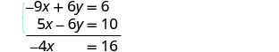 |
| Solve for the remaining variable, x. Substitute x = −4 into one of the original equations. |
|
| Solve for y. |
|
| Write the solution as an ordered pair. | The ordered pair is (−4, −5). |
| Check that the ordered pair is a solution to both original equations. |
|
| The solution is (−4, −5). |
Now we’ll do an example where we need to multiply both equations by constants in order to make the coefficients of one variable opposites.
Solve the system by elimination.
Solution
Solution
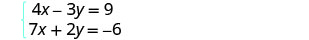 |
|
| Both equations are in standard form. To get opposite coefficients of y, we will multiply the first equation by 2 and the second equation by 3. |
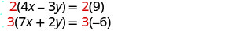 |
| Simplify. | 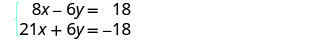 |
| Add the two equations to eliminate y. | 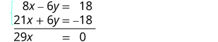 |
| Solve for x. Substitute x = 0 into one of the original equations. |
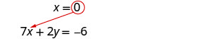 |
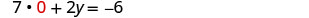 |
|
| Solve for y. | |
| Write the solution as an ordered pair. | The ordered pair is (0, −3). |
| Check that the ordered pair is a solution to both original equations. |
|
| The solution is (0, −3). |
What other constants could we have chosen to eliminate one of the variables? Would the solution be the same?
When the system of equations contains fractions, we will first clear the fractions by multiplying each equation by its LCD.
Solve the system by elimination.
Solution
Solution
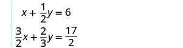 |
|
| To clear the fractions, multiply each equation by its LCD. | 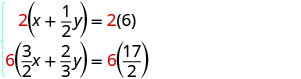 |
| Simplify. | 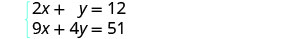 |
| Now we are ready to eliminate one of the variables. Notice that both equations are in standard form. |
|
| We can eliminate y multiplying the top equation by −4. | 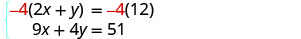 |
| Simplify and add. Substitute x = 3 into one of the original equations. |
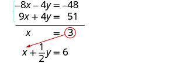 |
| Solve for y. | |
| Write the solution as an ordered pair. | The ordered pair is (3, 6). |
| Check that the ordered pair is a solution to both original equations. |
|
| The solution is (3, 6). |
In the Solving Systems of Equations by Graphing we saw that not all systems of linear equations have a single ordered pair as a solution. When the two equations were really the same line, there were infinitely many solutions. We called that a consistent system. When the two equations described parallel lines, there was no solution. We called that an inconsistent system.
Solve the system by elimination.
Solution
Solution
| Write the second equation in standard form. | |
| Clear the fractions by multiplying the second equation by 4. | |
| Simplify. | |
| To eliminate a variable, we multiply the second equation by .
Simplify and add. |
This is a true statement. The equations are consistent but dependent. Their graphs would be the same line. The system has infinitely many solutions.
After we cleared the fractions in the second equation, did you notice that the two equations were the same? That means we have coincident lines.
Solve the system by elimination.
Solution
Solution
| The equations are in standard form. | |
| Multiply the second equation by 3 to eliminate a variable. | |
| Simplify and add. |
This statement is false. The equations are inconsistent and so their graphs would be parallel lines.
The system does not have a solution.
Solve Applications of Systems of Equations by Elimination
Some applications problems translate directly into equations in standard form, so we will use the elimination method to solve them. As before, we use our Problem Solving Strategy to help us stay focused and organized.
The sum of two numbers is 39. Their difference is 9. Find the numbers.
Solution
Solution
| Step 1. Read the problem. | |
| Step 2. Identify what we are looking for. | We are looking for two numbers. |
|
Step 3. Name what we are looking for.
Choose a variable to represent that quantity. |
Let the first number.
the second number. |
|
Step 4. Translate into a system of equations. The system is: |
The sum of two numbers is 39.
Their difference is 9. |
|
Step 5. Solve the system of equations.
To solve the system of equations, use elimination. The equations are in standard form and the coefficients of are opposites. Add. Solve for . Substitute into one of the original equations and solve for . |
|
| Step 6. Check the answer. | Since and , the answers check. |
| Step 7. Answer the question. | The numbers are 24 and 15. |
Joe stops at a burger restaurant every day on his way to work. Monday he had one order of medium fries and two small sodas, which had a total of 620 calories. Tuesday he had two orders of medium fries and one small soda, for a total of 820 calories. How many calories are there in one order of medium fries? How many calories in one small soda?
Solution
Solution
| Step 1. Read the problem. | |
| Step 2. Identify what we are looking for. | We are looking for the number of calories in one order of medium fries and in one small soda. |
| Step 3. Name what we are looking for. | Let f = the number of calories in 1 order of medium fries. s = the number of calories in 1 small soda. |
| Step 4. Translate into a system of equations: | one medium fries and two small sodas had a total of 620 calories |
| two medium fries and one small soda had a total of 820 calories. |
|
| Our system is: | 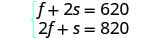 |
|
Step 5. Solve the system of equations. To solve the system of equations, use elimination. The equations are in standard form. To get opposite coefficients of f, multiply the top equation by −2. |
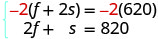 |
| Simplify and add. | 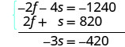 |
| Solve for s. | |
| Substitute s = 140 into one of the original equations and then solve for f. |
|
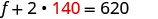 |
|
| Step 6. Check the answer. | Verify that these numbers make sense in the problem and that they are solutions to both equations. We leave this to you! |
| Step 7. Answer the question. | The small soda has 140 calories and the fries have 340 calories. |
Choose the Most Convenient Method to Solve a System of Linear Equations
When you will have to solve a system of linear equations in a later math class, you will usually not be told which method to use. You will need to make that decision yourself. So you’ll want to choose the method that is easiest to do and minimizes your chance of making mistakes.
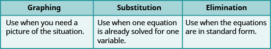
For each system of linear equations decide whether it would be more convenient to solve it by substitution or elimination. Explain your answer.
ⓐ ⓑ
Solution
Solution
-
ⓐ
Since both equations are in standard form, using elimination will be most convenient. - ⓑ
>Since one equation is already solved for y, using substitution will be most convenient.
Key Concepts
-
To Solve a System of Equations by Elimination
- Write both equations in standard form. If any coefficients are fractions, clear them.
- Make the coefficients of one variable opposites.
- Decide which variable you will eliminate.
- Multiply one or both equations so that the coefficients of that variable are opposites.
- Add the equations resulting from Step 2 to eliminate one variable.
- Solve for the remaining variable.
- Substitute the solution from Step 4 into one of the original equations. Then solve for the other variable.
- Write the solution as an ordered pair.
- Check that the ordered pair is a solution to both original equations.
Practice Makes Perfect
Solve a System of Equations by Elimination
In the following exercises, solve the systems of equations by elimination.
Solution
(6, 9)
Solution
Solution
Solution
Solution
Solution
Solution
Solution
(6, 1)
Solution
Solution
(2, 3)
Solution
Solution
Solution
(9, 5)
Solution
Solution
Solution
infinitely many solutions
Solution
infinitely many solutions
Solution
infinitely many solutions
Solution
inconsistent, no solution
Solution
inconsistent, no solution
Solve Applications of Systems of Equations by Elimination
In the following exercises, translate to a system of equations and solve.
The sum of two numbers is 65. Their difference is 25. Find the numbers.
Solution
The numbers are 20 and 45.
The sum of two numbers is 37. Their difference is 9. Find the numbers.
The sum of two numbers is −27. Their difference is −59. Find the numbers.
Solution
The numbers are 16 and −43.
The sum of two numbers is −45. Their difference is −89. Find the numbers.
Andrea is buying some new shirts and sweaters. She is able to buy 3 shirts and 2 sweaters for $114 or she is able to buy 2 shirts and 4 sweaters for $164. How much does a shirt cost? How much does a sweater cost?
Solution
A shirt costs $16 and a sweater costs $33.
Peter is buying office supplies. He is able to buy 3 packages of paper and 4 staplers for $40 or he is able to buy 5 packages of paper and 6 staplers for $62. How much does a package of paper cost? How much does a stapler cost?
The total amount of sodium in 2 hot dogs and 3 cups of cottage cheese is 4720 mg. The total amount of sodium in 5 hot dogs and 2 cups of cottage cheese is 6300 mg. How much sodium is in a hot dog? How much sodium is in a cup of cottage cheese?
Solution
There are 860 mg in a hot dog. There are 1,000 mg in a cup of cottage cheese.
The total number of calories in 2 hot dogs and 3 cups of cottage cheese is 960 calories. The total number of calories in 5 hot dogs and 2 cups of cottage cheese is 1190 calories. How many calories are in a hot dog? How many calories are in a cup of cottage cheese?
Choose the Most Convenient Method to Solve a System of Linear Equations
In the following exercises, decide whether it would be more convenient to solve the system of equations by substitution or elimination.
ⓐ ⓑ
Solution
ⓐ elimination ⓑ substitution
ⓐ ⓑ
ⓐ ⓑ
Solution
ⓐ substitution ⓑ elimination
ⓐ ⓑ
Everyday Math
Norris can row 3 miles upstream against the current in 1 hour, the same amount of time it takes him to row 5 miles downstream, with the current. Solve the system.
- ⓐ for , his rowing speed in still water.
- ⓑ Then solve for , the speed of the river current.
Solution
ⓐ ⓑ
Josie wants to make 10 pounds of trail mix using nuts and raisins, and she wants the total cost of the trail mix to be $54. Nuts cost $6 per pound and raisins cost $3 per pound. Solve the system to find , the number of pounds of nuts, and , the number of pounds of raisins she should use.
Writing Exercises
Solve the system
ⓐ by substitution ⓑ by graphing ⓒ Which method do you prefer? Why?
Solution
- ⓐ (8, 2)
-
ⓑ
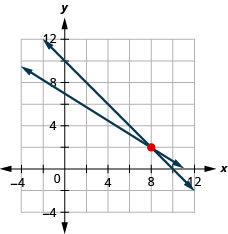
- ⓒ Answers will vary.
Solve the system
ⓐ by substitution ⓑ by graphing ⓒ Which method do you prefer? Why?
Self Check
ⓐ After completing the exercises, use this checklist to evaluate your mastery of the objectives of this section.
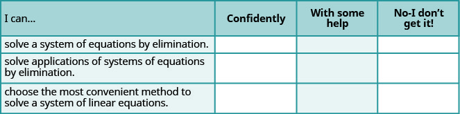
ⓑ What does this checklist tell you about your mastery of this section? What steps will you take to improve?